Block transfer service: from a block name to bytes on a socket
component index | BlockManager | BlockManagerMaster
NettyBlockTransferService moves blocks between JVMs. Its caller must already know which host, port, executor and block IDs to request. It does not discover the producer, schedule a task, or recompute a partition. A successful lookup at the driver and a successful fetch at the producer are separate events.
Flow at a glance
- Executor 5: Ask executor 2 to open a broadcast piece.
- Executor 2: Return a stream handle for the piece.
- Executor 5: Request the chunk and receive its bytes.
Key distinction: The open reply identifies the stream; the chunk response carries the bytes.
Show the animated flow

Runtime, endpoints and contracts
The driver and every executor construct a service in their own SparkEnv. BlockManager.initialize passes itself in as the local BlockDataManager. init creates a Netty TransportContext, client factory, bound TransportServer, and NettyBlockRpcServer; it configures the shuffle transport and supplies authentication bootstraps when enabled. The executor uses spark.blockManager.port (default 0, choose a port); spark.driver.blockManager.port overrides it on the driver. The BlockManagerId advertises the actual bound transfer port, not the driver's scheduler RPC port. Wiring and port choice · port defaults · server setup · registration
| Operation |
Inputs |
Observable result |
fetchBlocks |
Target host/port and executor ID, array of block-name strings, BlockFetchingListener, optional DownloadFileManager |
Asynchronous onBlockFetchSuccess(id, ManagedBuffer) or onBlockFetchFailure(id, cause) per block. |
fetchBlockSync |
Same address, one block ID and optional download manager |
Waits on a promise. File-backed or encrypted results are passed through; other received buffers are copied so the returned buffer lives beyond the callback. |
uploadBlock / uploadBlockSync |
Target, BlockId, ManagedBuffer payload, StorageLevel, class tag, optional checksum and seal flag |
A Future[Unit] acknowledgement or failure; the sync wrapper waits. An acknowledgement is not a directory of replicas. |
Fetch implementation · synchronous adapters · upload framing
Follow broadcast_9_piece1 from executor 2 to executor 5
Assume the piece is absent locally, the master has returned executor 2, and the two executors are on different hosts. The driver's response is metadata. Only the last exchange below carries the piece itself.
Sequence diagram · Open full sizeText equivalent
sequenceDiagram
participant C as Executor 5 BlockManager
participant D as Driver directory
participant N as Executor 2 Netty server
participant S as Executor 2 local BlockManager
C->>D: GetLocationsAndStatus(block ID, requester host)
D-->>C: Candidate IDs, host, port, status
C->>N: OpenBlocks(app ID, executor ID, block IDs)
N->>S: getLocalBlockData(block ID) inside JVM
S-->>N: ManagedBuffer
N-->>C: StreamHandle(stream ID, chunk count)
C->>N: Fetch chunk(stream ID, index)
N-->>C: Serialized piece bytes
- The requesting service obtains a
TransportClient. OneForOneBlockFetcher uses OpenBlocks for RDD blocks and broadcast pieces. With the new protocol, a set of shuffle blocks instead gets a shuffle-specific request (including grouped map/reduce IDs); old-protocol requests use OpenBlocks. These are messages on the block transfer connection, not Spark scheduler RPCs. Protocol selection
- On the serving executor the handler translates names into
BlockIds and asks the local block manager for buffers. For an ordinary block that means local serialized bytes; for a shuffle block it delegates to the shuffle resolver. It registers the buffers with OneForOneStreamManager, associates the stream with the client channel, and returns a handle, not the payload. Open request handler · local provider · stream ownership
- The requester issues a chunk request per index; the index maps back to a block ID for the listener. If the caller provided a download manager, the fetcher instead streams each chunk to a temporary file and delivers a file-backed buffer. The ordinary block manager chooses that path when the reported block size exceeds
spark.network.maxRemoteBlockSizeFetchToMem (default 200m). A local in-JVM hit and a successful direct read of another executor's same-host disk file bypass this network transfer. Chunk callbacks and download · caller decisions · threshold
Reverse direction: replication. An upload sends storage/type metadata plus the bytes. Small non-shuffle blocks use UploadBlock in a single RPC; blocks above the threshold and shuffle uploads use UploadBlockStream with a header and a separate data stream. The receiver calls putBlockData or putBlockDataAsStream; an ordinary streamed block is accumulated in a temp file, then admitted to the local store, while shuffle migration goes through its resolver. Failure to store is not a successful replication. Upload sender · receiver · stream completion and failure
Failure, cleanup and diagnosis
RetryingBlockTransferor retries outstanding IDs for eligible I/O failures after a wait and within its retry limit; stale callbacks from an earlier attempt are ignored. This is retrying a transfer to the same target. Trying another reported replica is a separate BlockManager decision. A failed connection can also prompt a driver liveness query; a known-dead executor is reported distinctly. Fetch startup/error handling · retry selection and state
Match the failing block ID with the advertised host:port on the producer. A connection failure before StreamHandle is different from “block not found” on a live server, and both differ from a consumer disk error writing a downloaded chunk. The external shuffle service, when configured, is a separate listener outside the executor JVM that can serve shuffle files (and optionally disk RDD blocks). YARN's ResourceManager does not relay the bytes. Service address versus executor address · disk-RDD option
Downloaded files are registered for cleanup or deleted on failure. On the ordinary in-memory receive path the transport releases a chunk buffer after its callback; a caller keeping it must retain or copy it. The server stream is scoped to the connection; when the owning block manager stops, the service closes its server, client factory and transport context. Download cleanup · callback buffer lifetime · shutdown